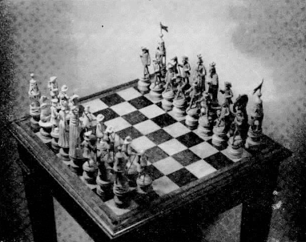

O xadrez é mais que um esporte, é uma arte, uma ciência, um estilo de vida. Trata-se de um jogo de tabuleiro de natureza recreativa ou esportiva, para duas pessoas e existe a mais de cinco séculos!
Pessoas de todo mundo praticam o xadrez, seja em torneios, nas escolas, nas praças. Preparamos aqui alguns tópicos para conhecer melhor essa arte. Boa partida!
Conhecido como Xadrez Ocidental ou Xadrez Internacional para distingui-lo dos seus antecessores e de outras variantes atuais. A forma atual do jogo surgiu no sudoeste da Europa na segunda metade do século XV, durante o Renascimento, depois de ter se desenvolvido a partir de suas antigas origens persas e indianas.
O Xadrez pertence à mesma família do Xiangqi e do Shogi e, atualmente segundo historiadores do enxadrismobr, todos eles se originaram do Chaturanga, que se praticava na Índia no século VI.
Existem muitos tipos de xadrez: xadrez ocidental, xadrez turco, xadrez chinês (Xiangqi), xadrez árabe (Xatranje), xadrez coreano (Janggi), xadrez japonês (Shogi), xadrez indiano (Chaturaji), xadrez tailandês (Makruk), xadrez indonésio e até o xadrez etíope (Senterej). Há muitas semelhanças entre tais jogos, com todos possivelmente compartilhando uma origem comum.
Tabuleiro que pertenceu a Machado de Assis. Fonte: Wikimedia
A partida de xadrez é disputada em um tabuleiro de casas claras e escuras, sendo que, no início, cada enxadrista controla dezesseis peças com diferentes formatos e características. O objetivo da partida é dar xeque-mate (também chamado simplesmente de mate) no rei adversário.
Teóricos do enxadrismo desenvolveram várias estratégias para se atingir este objetivo, embora não seja um fato muito comum em jogos oficiais, pois os jogadores em grande desvantagem ou percepção de iminência da derrota têm a opção de abandonar (desistir) a partida, antes de receberem o mate.
As competições enxadrísticas oficiais tiveram início ainda no século XIX, sendo Wilhelm Steinitz considerado o primeiro campeão mundial de xadrez. Existe também o campeonato internacional por equipes realizado a cada dois anos, a Olimpíada de Xadrez.
Desde o início do século XX, duas organizações de caráter mundial, a Federação Internacional de Xadrez e a Federação Internacional de Xadrez Postal vêm organizando eventos que congregam os melhores enxadristas do mundo. O atual campeão do mundo é o norueguês Magnus Carlsene a campeã (2018) é a chinesa Ju Wenjun.
Fonte: Wikipédia
![Uma gravura antiga, na qual aparece desenhada uma sala com três pessoas, um homem em pé, uma mulher e outro homem sentados. Um dos homens, o que encontra-se sentado, está vestido de preto com meias longas, casaco comprido e sapato de fivela. este homem esta realizando um movimento em um tabuleiro de xadrez, sua aparencia é séria, denotando concentração. A mulher está de vestido longo, cabelos presos e aparece de lado na figura, ela aguarda sua vez de jogar, observando o seu oponente. O terceiro homem está em pé usando uma jaqueta longa estilo de gala do século XIX, está também com uma peruca branca. Ele aparentemente etsa organizando uma caixa que está sobre a mesa. Há um cachorro deitado no chão ao lado do homem que está jogando. Ao fundo nota-se dois quadros na parede, um aparador com um vaso sobre este e uma cadiera.](image/benjamin.jpg "Benjamin Franklin joga xadrez com a Senhora Howe")
Benjamin Franklin joga xadrez com a Senhora Howe. Fonte: New York Public Library's
{kind=link}